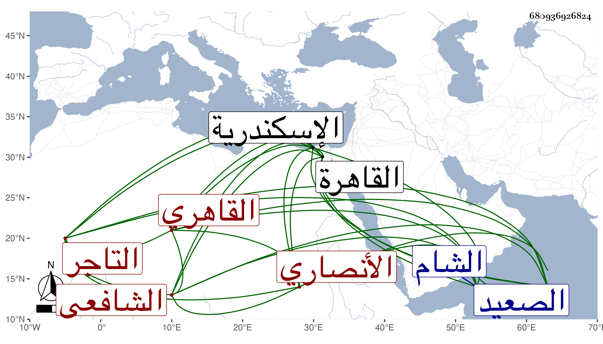

0902Sakhawi.DawLamic.ITO20230111-ara1.EIS1600.680936926824
Biography ID: 680936926824
752
محمد بن عبد الرحمن بن عبد الله بن يوسف بن أحمد بن عبد الله ولي الدين أبو الفضل بن الزين بن العلامة سيبويه الوقت الجمال الأنصاري القاهري الشافعي التاجر والد المحب محمد الآتي ويعرف كسلفه بابن هشام . ولد سنة ست وثمانين وسبعمائة تقريبا بالقاهرة ونشأ بها فحفظ القرآن عند الشهاب الهيثمي وغيره والعمدة والمنهاج وعرضها على جماعة وحضر دروس البلقيني وكان يحكي عنه والبيجوري والشمس الغراقي فمن بعدهم واشتغل قليلا في النحو على عمه المحب محمد الآتي والشمس البوصيري وسمع على التنوخي والحلاوي والشهاب الجوهري بل كان يخبرنا أنه سمع على البلقيني والزين العراقي وغيرهما ، وتكسب بالشهادة أولا ثم تركها وحج في سنة تسع عشرة ، وتعاني التجارة وسافر بسببها إلى الشام واسكندرية والصعيد وغيرها ، وعرف بالديانة والثقة والأمانة والتحري في معاملاته وديانته ورغبته في شهود المواعيد وحلق العلم والجماعات وحدث سمع منه الفضلاء قرأت عليه . ومات في يوم الأربعاء مستهل جمادى الثانية سنة ست وستين رحمه الله وإيانا .
